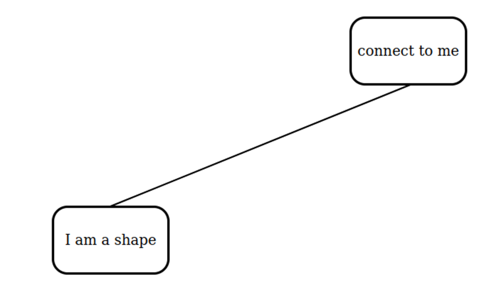
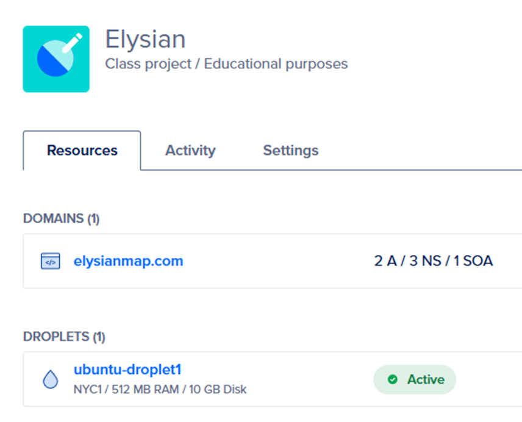

Capstone Portfolio
Capstone Portfolio
This section displays artifacts relating to the functional prototype of the website.
The creation and connection between shapes are key components to diagramming. The prototype allows users to create shapes by clicking on them in a menu, which spawns the shape in the middle of the workspace. Two shapes can connect to each other by clicking on them successively. The intended behavior is to drag a line from one shape to another, but this is not implemented yet for simplicity. Vanilla JavaScript limits the current prototype because the creation of shapes is redundant and there is not much control over line creation. I intend to use Canvas API because of its specialization in 2D graphics, which should improve development experience and website performance.

Shapes can additionally move and have their text edited.
This artifact shows the hosting dashboard for the website. Digital Ocean is the company that provides the physical server resources. I have full access to the server’s console, so I downloaded nginx, an HTTP web server, and made the proper configurations to host the website. Maneuvering nginx and the web server console was difficult, and I had to thoroughly read various documentation to properly host. I also purchased a domain, “elysianmap.com,” and configured its name servers to point to Digital Ocean’s, which makes the domain point to the correct web server.

The dashboard shows the domain and physical server, referred to as a “droplet” by Digital Ocean.